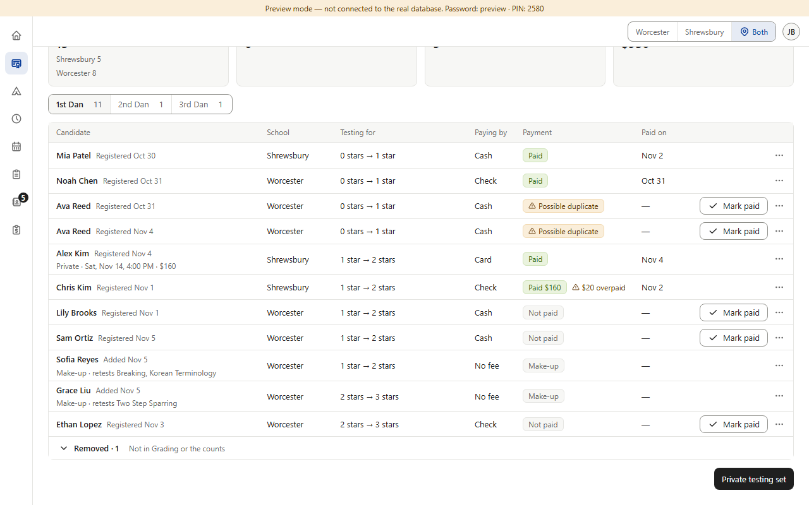
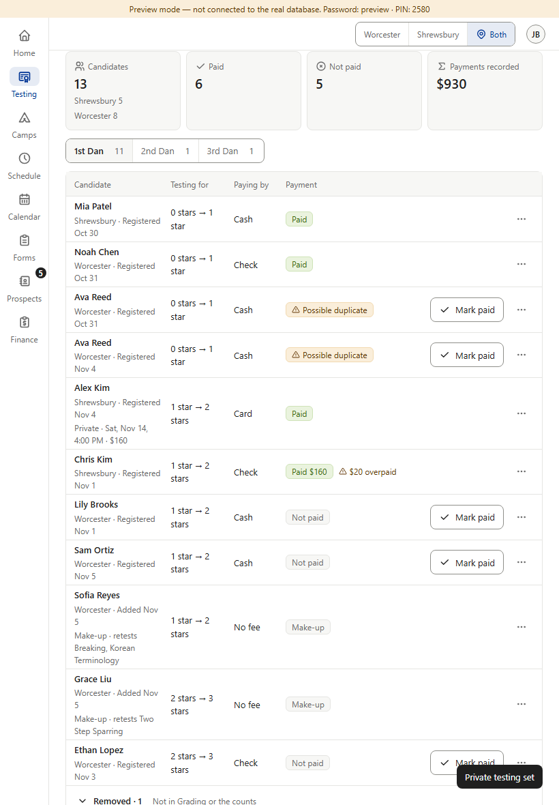
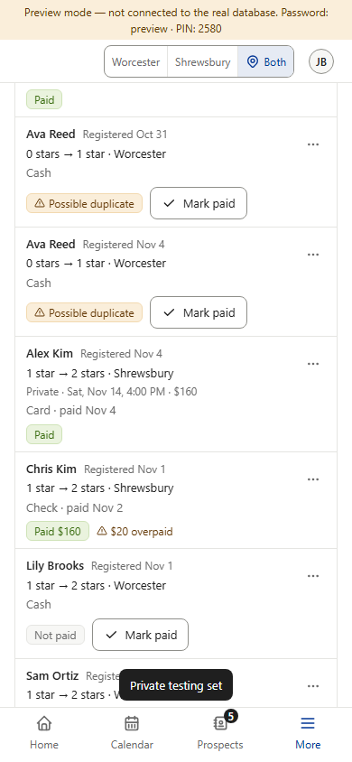
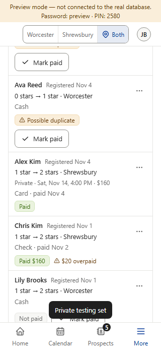
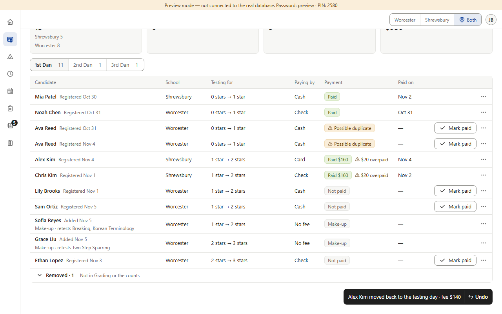
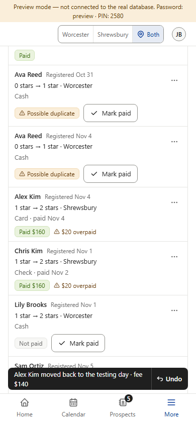
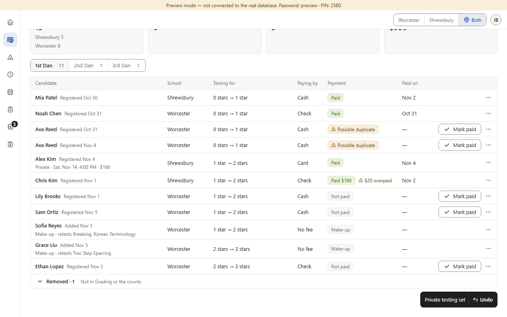
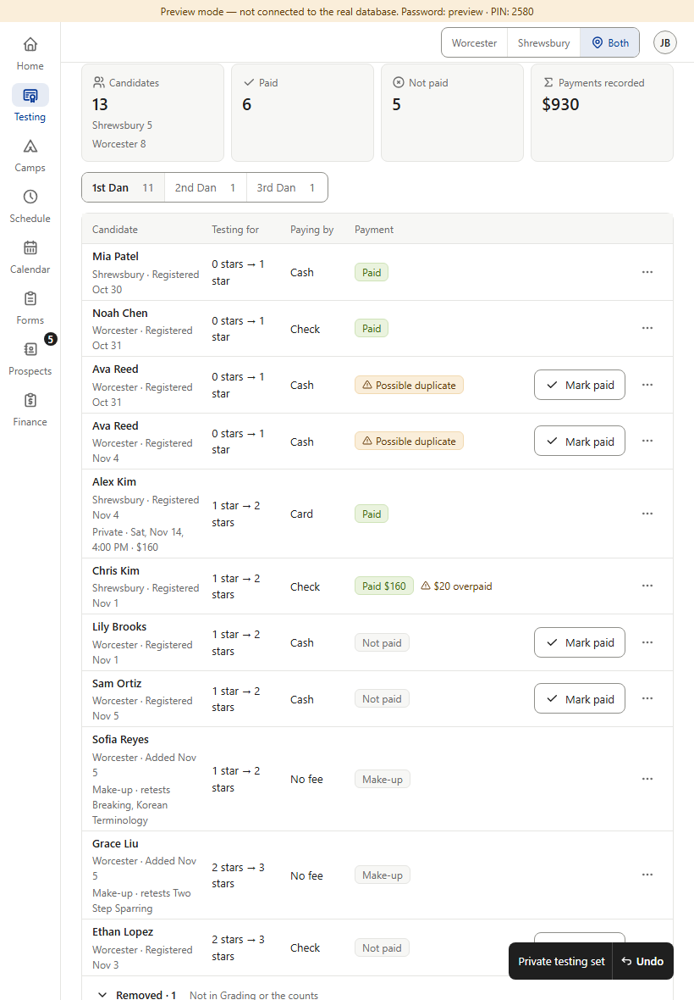
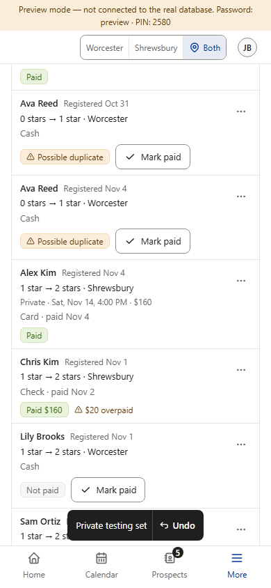
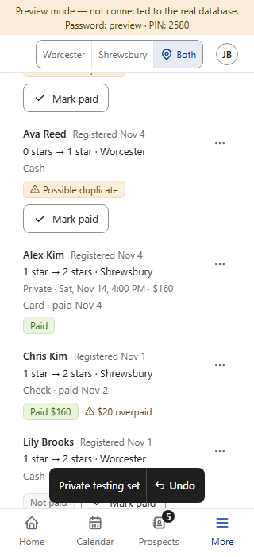

The toast gets the same Undo button as Star’s other Undo toasts (e.g. “Alex Kim moved back to the testing day · fee $140 · Undo”, bottom of the Today column): text · thin divider · ↶ Undo. Undo puts the old private day and time back, or clears a newly set one, then the toast says “Undone”. The Set / Change private testing dialog has already closed when the toast shows, so Undo can be reached by mouse and keyboard like any other toast. The make-up toast is a separate choice: picture A3b. Both toast texts (“Private testing set”, “Drew Park added”) are still marked PROPOSAL in the code: these pictures are the first time they are shown for approval, and an OK here removes the PROPOSAL tags.









